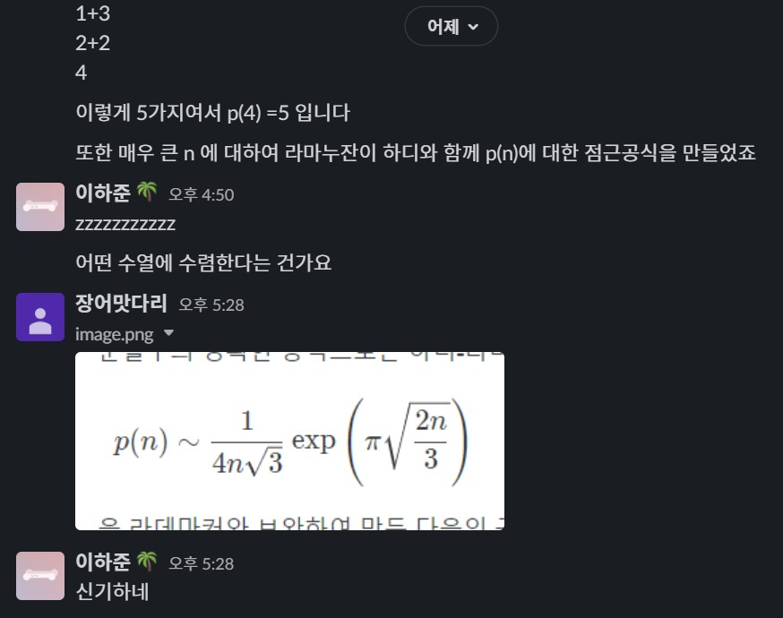

아침에 일어나자마자 피곤함을 느꼈다. 어제도 늦게 자서 그런가. 졸린 몸이었지만 어제 듀오링고 1등을 뺏어간 사람의 자리를 다시 되찾아야 했기에 30분동안 같은 프랑스어 스토리를 했다. 같이 살던 여자가 집을 나간 사이 주인공의 심정을 그리는 스토리다. 알고보니 주인공은 개였고 여자는 1시간동안 치과 갔다온 거여서 개가 울고불고 했던 게 너무 귀여웠다.
누워있다가 카레먹으면서 1000xp를 넘는 경험치를 다 채우고 자리를 되찾아 이번 리그도 1등을 했다. 요즘 프랑스어가 꿀잼인건가 듀오링고가 꿀잼인건가 헷갈린다. 어제 옹스짱한테도 전도했는데 하는 맛이 있다고 했으니 듀오링고가 꿀잼인 건 여러 사람으로부터 증명이 될 것 같다. 내 패밀리 플랜도 6명 가득 찼으니 후후
과외가 끝나고 엄마랑 순두부 가게에 갔다. 초당순두부를 시켰는데 맹물에 순두부 넣어서 끓인 국이 나왔다. 간이 하나도 안되어 있었지만 간장하고 먹으니까 괜찮았다. 밥이랑 먹기엔 좀 이상했지만 그래도 신기한 경험이었다.
집에 가자마자 누웠다. 구름이 한 점 없었다. 피곤이 몰려왔다. 그대로 베개를 안고 잤다.
킹어갓다리가 오늘도 재밌는 걸 가져왔다. 맨날 먼저 연락해줘서 고마운 후배다. 자연수 분할 가능 수 n에 따라 특정 수열에 수렴한다는 것이었다.
상세한 설명 감사합니다.
얘기하다가 알고리즘 동아리 내에서 하는 대회가 1시간 20분 전에 열려서
삘받아서 C랑 다른 문제 하나도 풀어 봤는데
틀리고 지쳐서 나중에 하기로 했다. 왜 틀린지는 아직도 모르겠다